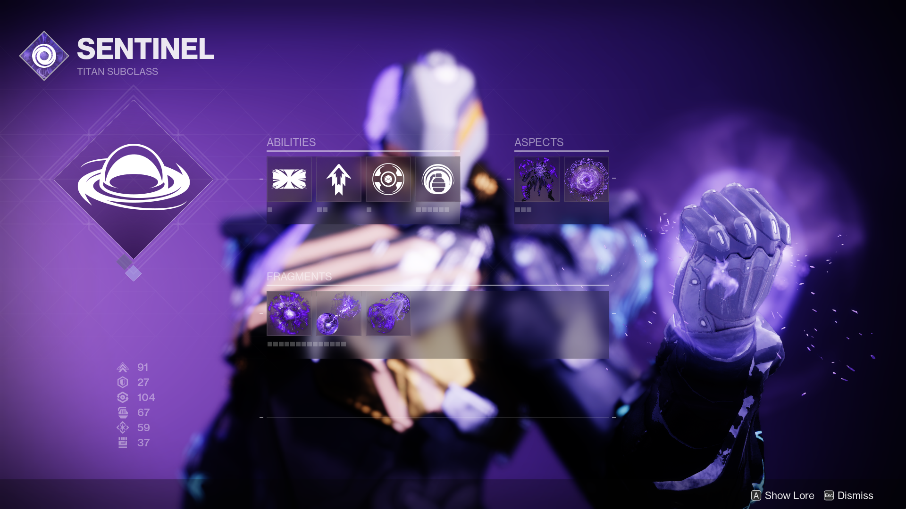
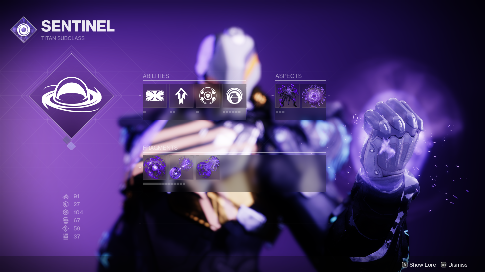
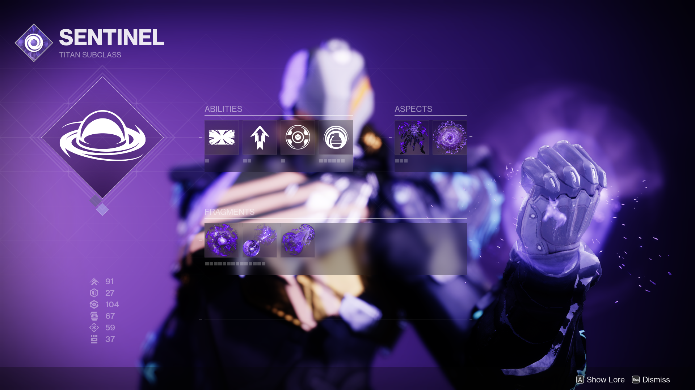

with the release of the Witch Queen Dlc on Febuary 22nd it is important to know what will be changing in the game.
To see some of the new changes coming in the witch queen release check out the video below.
Yes after six years destiny 2 will finally be getting weapon crafting. What does this mean? It means you will finally be able to craft the weapon with the rolls and perks that you want. Instead of having to spend hours, days, or even months to get the roll you want.

With the release of The Witch Queen DLC Bungie has reworked all of the void subclasses. Adding the aspects and
fragments that came with the stasis subclasses when Beyond light released in 2021.

Savathuns throne world is a new destination filled with secrets just waiting to discovered.

With the release of the Witch Queen Bungie has added a new difficulty to it,s campaign. Legendary mode in legendary
the enemies will hit for double the damage and have twice as much health. But if you manage to complete this task
you are well rewarded at the end of the campaign.

With the release of the Witch Queen Bungie has added a new enemy. Hive Guardians these new enemies are able to wield
the light as a weapon (The powers that the player has) The witch Queen DLC focuses on these enemies

With the release of the Witch Queen Bungie has added over 40 new weapons including a spear like weapon called the glaive. The glaive can shoot projectiles and throw up a shield to protect you and your allies.
With the release of the Witch Queen Bungie has added over 40 new weapons with brand new perks that can make your builds even greater than they have been before. Psychohack is a new Origin Trait in Destiny 2 with the release of The Witch Queen expansion that comes with all weapons acquired from Savathun's Throne World. Sustained damage from the weapon lowers the target's damage output for a short duration. Origin Traits in general are a column added with the release of this expansion. Much like the Intrinsic Traits that exotics in Destiny 2 have, Origin Traits serve as a way to identify the origin and identity of weapon manufacturers. Each of the Year Five weapons will include an Origin Trait. For example, all Veist weapons will now drop with the Veist Stinger Origin Trait. By adding a new column with a bevy of different options depending on the weapon's origin, Bungie has manufactured a reason to farm not only new weapons for an extra perk but the craftable version of that particular weapon. With weapon crafting having been implemented, god rolls are far more attainable and player agency is once again a thing.